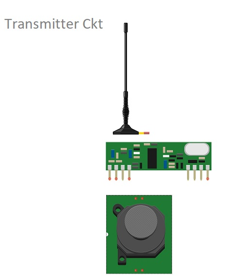

Student at Sri Sairam Institute Of Technology
I'm Arun M,and I'm currently a 20-year-old student pursuing a degree in Computer Science Engineering. I've always had a fascination with technology and its potential to solve real-world problems, which is what led me to choose this field of study.
I've been actively involved in various coding and programming projects since high school, which has allowed me to gain a solid foundation in languages like Python, Java, and C++. During my time at university, I've not only excelled in my coursework but also participated in coding competitions and hackathons, where I've collaborated with fellow students to develop innovative solutions under tight deadlines.
In addition to technical skills, I believe in the importance of soft skills and teamwork. I've been a part of several group projects where effective communication and collaboration were key to success. This has taught me the value of understanding different perspectives and working collectively to achieve a common goal.
Outside of academics, I'm an avid problem solver. I enjoy tackling challenges that require creative thinking, whether it's a coding challenge or a real-life puzzle. I'm also an enthusiast of emerging technologies like artificial intelligence and blockchain, and I'm excited about the potential they hold for reshaping various industries.
Looking forward, I'm keen to apply my skills and knowledge in a real-world setting. I'm particularly interested in internships or roles where I can contribute to building innovative software solutions and further develop my abilities. Ultimately, my goal is to not only excel in my career but also continue learning and adapting in this rapidly evolving tech landscape.
Eutrophication is a process that results in an overabundance of algae and other aquatic plants when too many nutrients, such as nitrogen and phosphorus, enter a body of water. Fish and other aquatic life may suffer if the oxygen levels in the water are reduced as a result of this process. Numerous bodies of water are becoming more and more eutrophic. These systems are capable of detecting excessive nutrient levels and taking preventative action to stop eutrophication by continuously monitoring the quality of the water using sensors and analyzing the data gathered. To lower the nutrient levels in the water and stop the overgrowth of algae and other aquatic plants, the RC boats can be used. These boats are fitted with sensors and chemical and biological agents. This technology can assist in preserving and protecting aquatic life. The value produced by the buoy and satellite is not real time. In order to increase more accuracy, a mini boat can be employed and would be able to collect all the required data and parameters from the water bodies and send to the real time. This could be cost effective and provide a large area of coverage on the water bodies.
Download my resume (PDF).